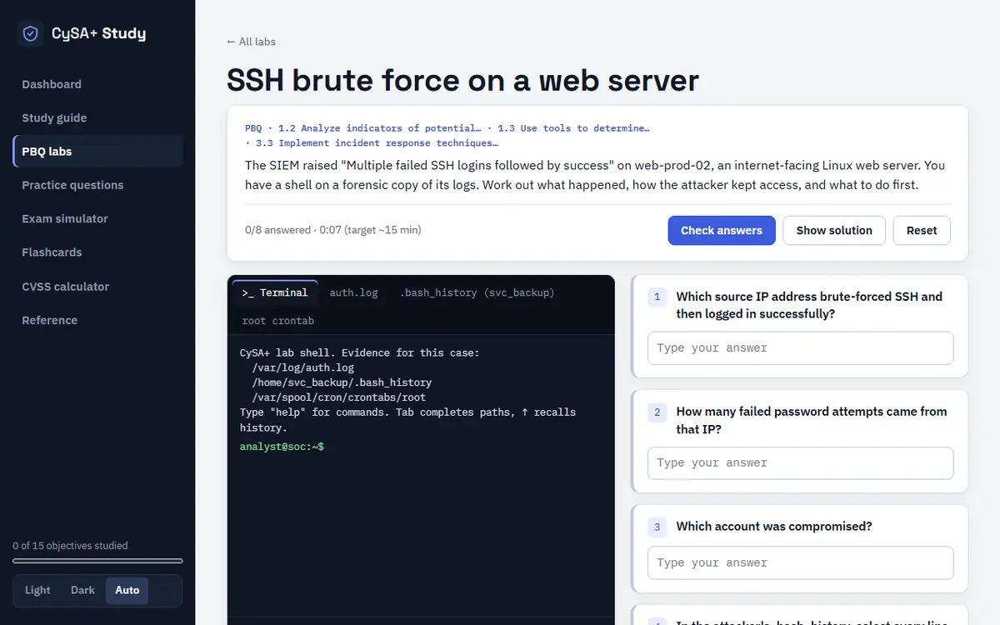

CySA+ Study
Summary
CySA+ Study is an exam trainer for CompTIA CySA+ (CS0-004), the V4 exam. Its centrepiece is 16 performance-based labs where you investigate evidence in a Linux shell I built in pure JavaScript, flag malicious log lines, write firewall rules and order incident response steps, all with partial-credit grading. It is a static Vite and React site, with no server behind it.
Problem
The performance-based questions are the hardest part of the exam to practice, because they ask you to do analyst work, not recall a fact. I wanted the labs to feel like the real work: a SIEM alert, a forensic copy of the logs, and a shell to dig through them. They also had to be provably correct, since a lab with a wrong answer key teaches the wrong thing.
What I built
- 16 PBQ labs, including SSH brute force, DNS tunnelling, beaconing in Zeek logs, phishing headers, ransomware IR, nmap scan results, firewall rules and vulnerability prioritization. Each has a scenario, evidence files, hints, a full solution and explanations.
- An analyst shell over each lab's virtual files, with pipes and
grep,awk,sort,uniq -c,cut,tr,head,tail,wc,base64 -d(including PowerShell UTF-16LE),sha256sum,stringsandfind. - A timed exam simulator that opens with PBQ labs like the real exam, then multiple choice weighted by domain, with flagging, a question grid and a review of every item.
- 400+ scenario questions tagged by objective, many with log, packet, header or scan exhibits, plus flashcards with Again and Got it tracking and a searchable glossary.
- A study guide for all 15 V4 objectives across the 4 domains (34, 26, 24 and 16% of the exam), a CVSS v3.1 base-score calculator following the FIRST spec, and a reference section (Kill Chain, Diamond Model, ATT&CK tactics, NIST IR life cycle, Windows Event IDs).
How it works
src/lib/shell.jsis the pure-JS shell. It supportsgrepwith BRE and ERE and the-i -v -c -n -o -w -l -r -A -Bflags, and anawkwith patterns, fields, arrays,ENDandprintf.src/lib/grade.jsdefines the task types (input,single,multi,lines,order,grid), the partial-credit scoring andvalidateLab.- Each lab is one file in
src/data/labs/. All study content is plain data, so adding a question with the right objective makes it show up in the filters, the dashboard and the exam simulator. - Progress lives in the browser's localStorage. Nothing is sent anywhere.

Evidence
node scripts/validate-labs.mjs checks every lab: the answer keys are consistent, the solution scores 100%, and every terminal task's command really prints its answer from the evidence. That is the guard against shipping a lab that cannot be solved the way it says.
The site is live, runs entirely in the browser, and is unofficial: it is not affiliated with CompTIA, and all notes, questions, labs and definitions are original.
What I'd do next
- Check the objective topics against CompTIA's PDF. The V4 page lists the 15 objectives with a one-line scope each and no numbers or sub-bullets. The topic lists under each objective are built from those scope lines plus the CS0-003 outline they replace, so they are not CompTIA's wording and should be checked against the official objectives.
- Keep the validator as the gate. Any new lab goes through the same script before it ships.